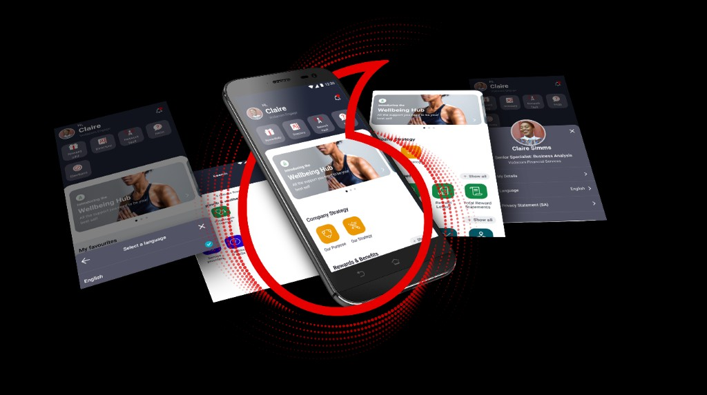
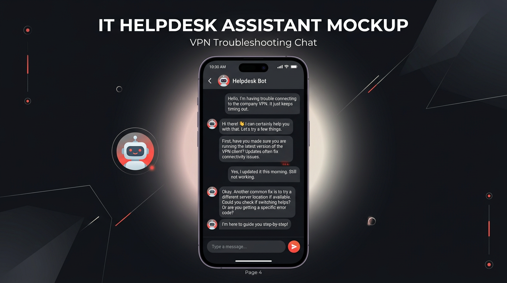

Selected work
CASE STUDIES WITH THE WORK IN THEM.
I design useful product experiences, then work through the detail that helps them ship. These are evidence-led project stories — real supplied project artefacts, clear contribution, and no invented outcome claims.
01ContextWhat the product needed to solve.
02Design decisionsHow the experience was structured.
03Interface evidenceProject screens, not generated filler.
04Build directionHow the work becomes practical for delivery.

UX / UI DESIGN · ENTERPRISE
Vodacom Engage
Making an employee app feel like a useful place to start — with a clearer hierarchy for everyday internal tasks.
Open case study →
PRODUCT DESIGN · RESPONSIVE
Stance Insurance
Insurance cover designed around the driver and the car, expressed through a focused responsive product experience.
Open case study →
CONVERSATIONAL UX · SERVICE DESIGN
IT Helpdesk Assistant
A guided support conversation that helps people troubleshoot with confidence and reach the right next step.
Open case study →Visual archive
MORE INTERFACE WORK.
Selected UI explorations and resources are kept separate from the documented case studies, so project stories remain focused and easy to understand.